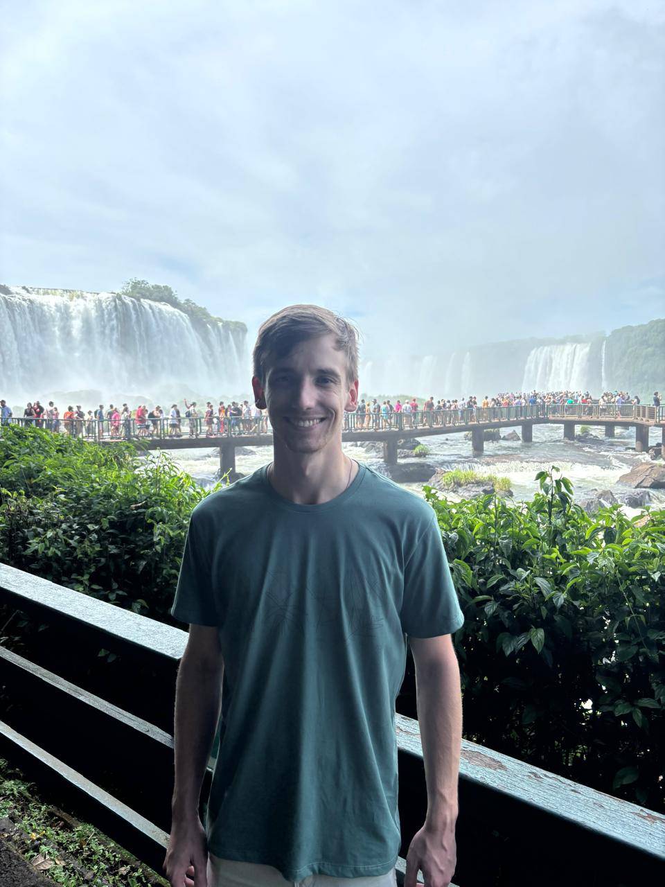

Games
Grande entusiasta de jogos, sendo os principais de ação e aventura, de preferencia no modo história, recentemente finalizando Days Gone e Assassin's Creed Odyssey.
Um pouco sobre quem eu sou e o que eu faço.

Estudante & Entusiasta de Tecnologia
Olá frodo...
Grande entusiasta de jogos, sendo os principais de ação e aventura, de preferencia no modo história, recentemente finalizando Days Gone e Assassin's Creed Odyssey.
Gosto muito de filmes de ação, quase sempre extendendo meu gosto para series e maratonas de filmes e séries. No ultimo fim de semana maratonei La Casa de Papel.
Tenho grande apresso por velocidade, acompanhando algumas corridas de Stock car e alguns circuitos regionais, não podendo esquecer do Kart.
Gosto de cozinhar, dentre os meus pratos preferidos, gosto muito de churrasco, lasanha e pizza.
No meu tempo livre gosto de passar tempo com a minha familia, cozinhar, conversar ou fazer alguma viagem para algum ponto turistico.